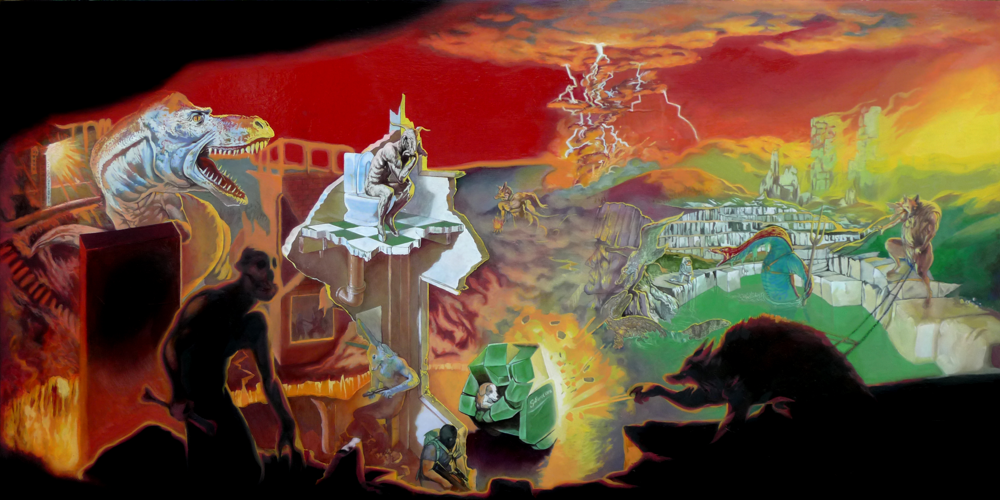
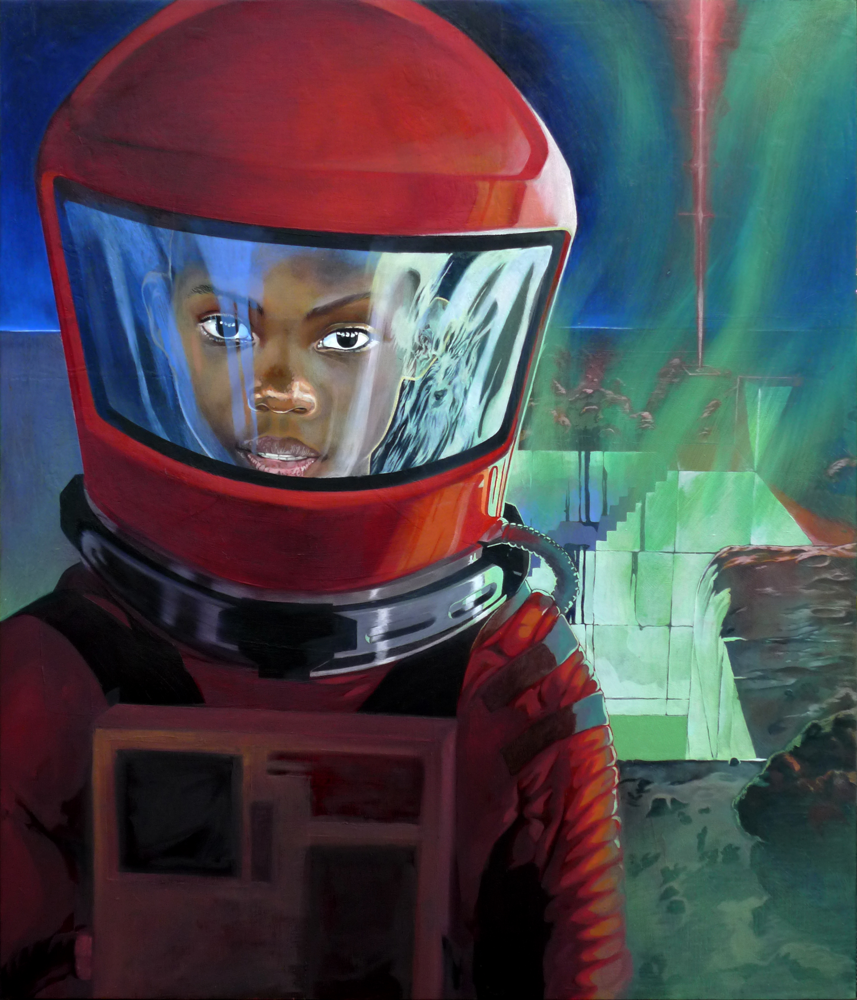

"Back" was created for the US Ambassador's Residence and was brought by my good friends Andrew and Greta Glen, who are awesome

"The Birth of Tragedy" was a Finalist in the Wallace Art Awards and is now hanging in my stairwell scaring everyone who visits

"Eros and Thanatos" was exhibited at Orex Art in Auckland and Mum really liked it (???) so that's at their place

"I believe that the Fish and Human can co-exist peacefully" was a finalist in the Empire Arts Young Artists competition, and everyone wants it, but can't have it because it's my favorite

"Mindfields" was purchased by NZ art collector James Wallace and is housed at the Pah Homestead so it's like, a legit artwork

"Frontier" is in the 'private collection' of dedicated James Brown art collectors Wendy and Stephen Brown (Mum & Dad)

"Hollywood Apocalpse" was bought by Ruth Korver (Thanks!)

"Reason" is in my 'private collection' (right above the toilet)

"Red Sky" is owned by fellow 'partist' (part-time artist) Matthew Warmington

My brother was willing to take "The Theatre of Dionysus" when I was trying to clear out the shed :)